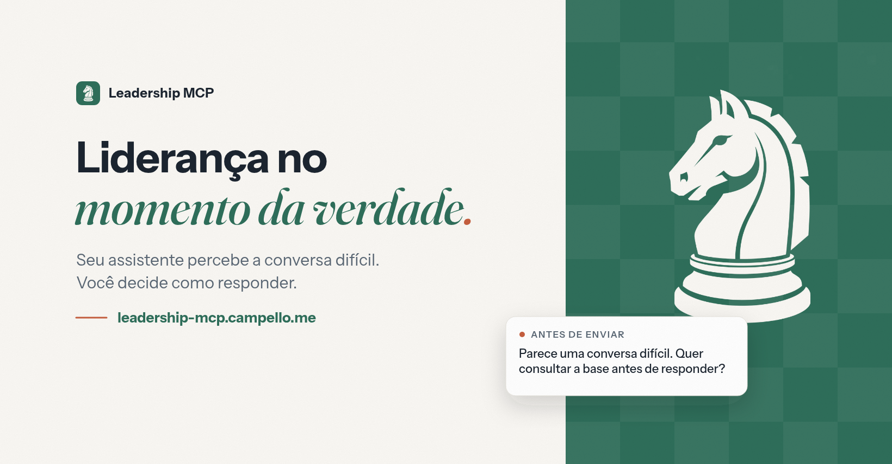
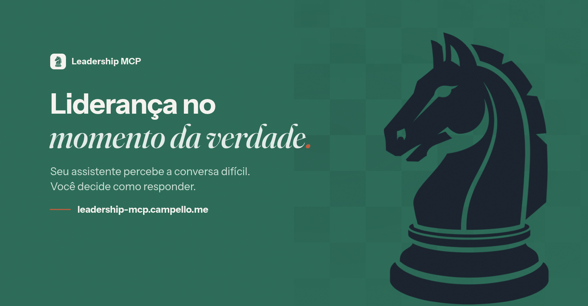

Marca v2: o cavalo da ilustração
A ilustração do cavalo aplicada nas cores da marca (traço bege, verde ou ink conforme o fundo). As cores continuam as mesmas. Três capas do Facebook, da mais conservadora à mais ousada.
Símbolo
Capas do Facebook · 1640 × 856


Regras
TipografiaInstrument Sans para títulos e texto; Fraunces itálico só na ênfase (“momento da verdade”). No máximo duas famílias.
CoralSó no olho do cavalo, no ponto final do título e no marcador do cartão. Nunca como faixa ou fundo.
Paleta